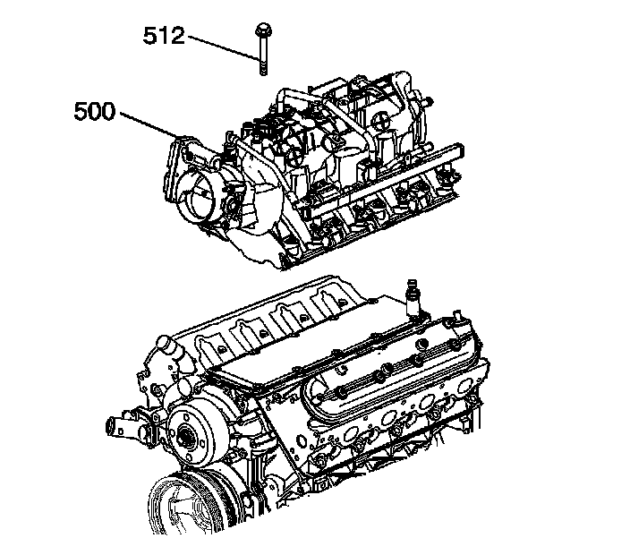

91. Intake Manifold Installation
Intake Manifold Installation (RPO L92)

Important:
^ The intake manifold, throttle body, fuel injection rail, and fuel injectors may be removed as an assembly. If not servicing the individual components, install the intake manifold as a complete assembly.
^ DO NOT use the intake manifold gaskets again. Install NEW intake manifold-to-cylinder head gaskets.
Install NEW intake manifold-to-cylinder head gaskets (514).

1. Install the first design engine intake manifold (500).
2. Apply a 5 mm (0.20 in) band of threadlock GM P/N 12345382 (Canadian P/N 10953489) to the threads of the intake manifold bolts (512). Refer to Sealers, Adhesives, and Lubricants.

3. Install the second design engine intake manifold (500).
4. Apply a 5 mm (0.20 in) band of threadlock GM P/N 12345382 (Canadian P/N 10953489) to the threads of the intake manifold bolts (512). Refer to Sealers, Adhesives, and Lubricants.
Notice: Refer to Fastener Notice.
5. Install the intake manifold bolts.
1. Tighten the intake manifold bolts (1-10) a first pass in sequence to 5 N.m (44 lb in).
2. Tighten the intake manifold bolts (1-10) a final pass in sequence to 10 N.m (89 lb in).
6. Install the fuel rail. Refer to Fuel Rail and Injectors Installation.
7. Lubricate the manifold absolute pressure (MAP) sensor grommet (715) with clean engine oil.
8. Install the grommet onto the MAP sensor (714).
9. Install the MAP sensor and retainer (736).
10. Install the positive crankcase ventilation (PCV) hose - dirty air (716).